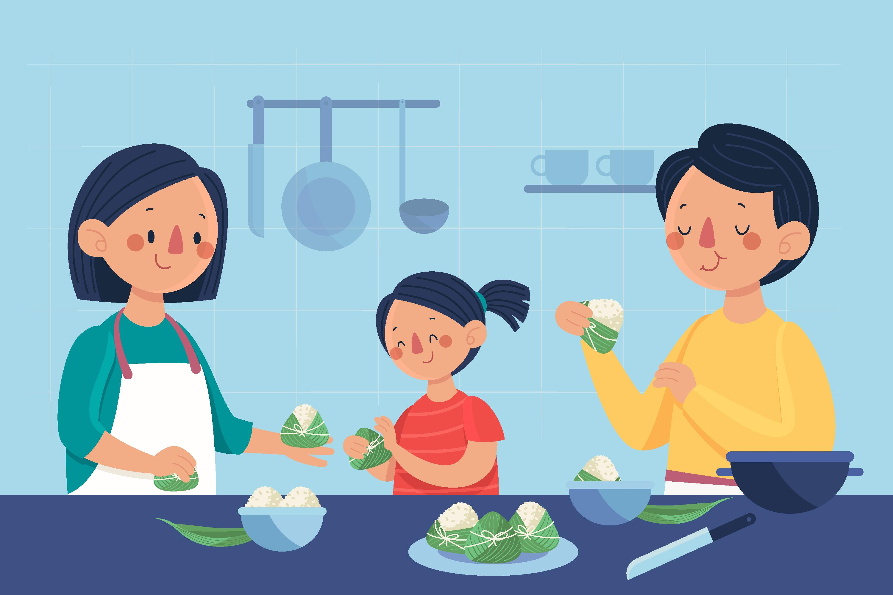
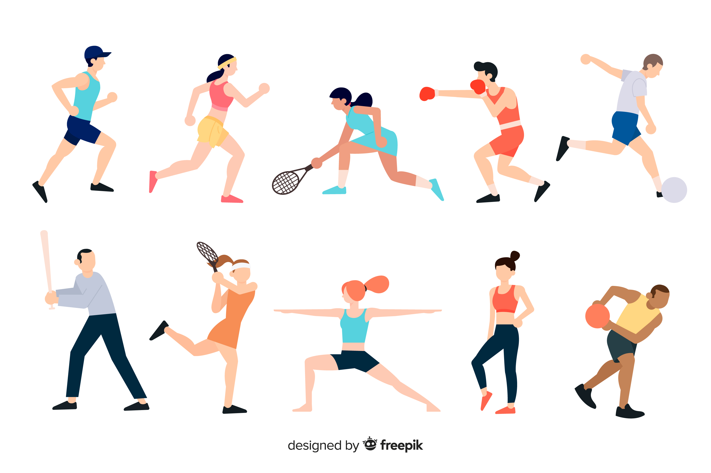
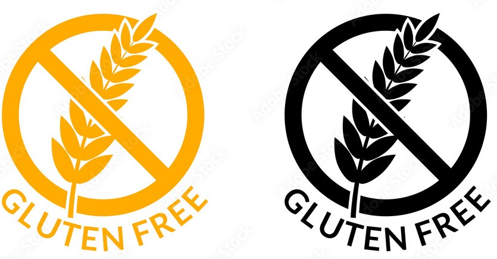

DESCENSO DE PESO

EL PLAN DE DESCENSO DE PESO SE BASA EN TRABAJAR CANTIDAD Y CALIDAD DE ALIMENTOS, LA EDUCACIÓN ALIMENTARIA COMO PILAR DEL TRATAMIENTO, RESPETANDO GUSTOS DE CADA PACIENTE.
- Vas a aprender:
- Importancia de realizar las comidas
- Porciones de los alimentos
- Modos de preparacion y recetas adaptadas a tus gustos alimentarios.
- Leer el rotulado de los alimentos para identificar ingredientes de los mismos.
DESCENSO DE PESO PARA NIÑOS:

En el plan para niños se trabaja no solo con ellos sino también con la educación alimentaria de todo el entorno familiar.
Al trabajar con niños respetamos sus emociones, susgustos, sin hacer prohibiciones.
Se trabaja sobre todo con la educación del niño y de los padres, enseñandoles cuales son las porciones adecuadas, dependiendo de la edad.
Y porque es tan necesario en el niño incluir en su alimentación frutas, verduras, fideos, arroz, carnes, es decir la importancia de que la alimentacón sea completa tratando de evitar o espaciar el consumo de bebidas saborizadas, snack, etc.
Se busca que este descenso del niño se lo mas natural, sin que esto para El signifique un problema o que lo llene de ansiedad.
Es fundamental el acompañamiento de los padres ya que en estos casos la alimentación esta condicionada por ellos , pues son quienes compran los alimentos y bebidas que el niño consume.
NUTRICIÓN DEPORTIVA

SE BASA EN DETERMINAR EL REQUERIMIENTO DE CALORÍAS NECESARIOS DEPENDIENDO DE EL TIPO DE ACTIVIDAD, TIEMPO Y FRECUENCIA, LA DISTRIBUCIÓN DE CADA UNO DE LOS NUTRIENTES NECESARIOS ( PROTEÍNAS, LIPIDOS Y HIDRATOS DE CARBONO) , Y EN CASO DE PACIENTES VEGETARIANOS APRENDER SOBRE COMPLEMENTACIÓN PROTEICA. ADEMÁS EL PILAR DE ESTE PLAN AL IGUAL QUE EN LOS DEMÁS SE BASA EN HACER EDUCACIÓN ALIMENTARIA, MANEJO DE COLACIONES ADECUADAS ANTES Y DESPUÉS DEL ENTRENAMIENTO, COMO ASI TAMBIÉN EL PAPEL FUNDAMENTAL QUE JUEGA LA HIDRATACIÓN.
NUTRICIÓN CELIACA

SE BASA EN EDUCAR A CADA PACIENTE SOBRE LA ENFERMEDAD, SUS SIGNOS Y SÍNTOMAS CLÍNICOS, Y PRINCIPALMENTE ENSEÑAR QUE ALIMENTOS SE DEBEN EVITAR, Y CUALES SON APTOS PARA SU CONSUMO. SE BUSCA QUE EL PACIENTE PUEDA LLEVAR UNA ALIMENTACIÓN COMPLETA Y VARIADA, PARA ELLOS SE REALIZAN PLANES ACORDE A CADA PACIENTE, TENIENDO EN CUENTA EDAD, PESO, ALTURA, SI HAY O NO PRESENCIA DE SÍNTOMAS O SI EL PACIENTE ES ASINTOMATICO, DANDO IDEAS DE MENÚ, DISTRIBUCIÓN DE COMIDAS, Y MATERIAL RELACIONADO A LA ENFERMEDAD. LO MISMO SE REALIZA AL TRABAJAR CON OTRAS PATOLOGÍAS COMO DIABETES, PATOLOGÍAS GASTROINTESTINALES, DONDE DE ACUERDO A LOS SINTOMAS QUE PRESENTA CADA PACIENTE SE VA ADECUANDO LOS ALIMENTOS, LOS HORARIOS DE COMIDAS Y DISTRIBUCIÓN DE LA MISMA, YA QUE LA FINALIDAD DEL TRATAMIENTO NUTRICIONAL ES HACER UN BUEN MANEJO DE LA ENFERMEDAD BUSCANDO LA DESAPARICIÓN DE LOS SÍNTOMAS Y EL BIENESTAR DEL PACIENTE.